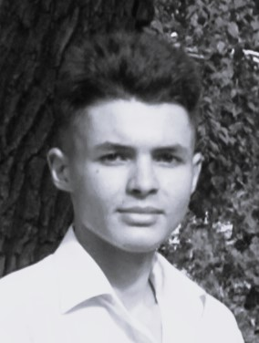

Мои фото


IT-специалист широкого профиля, Веб-разработчик и дизайнер
Приветствую! Я Владислав — IT-специалист в разных областях разработки. На текущий момент являюсь студентом СГУ, факультет КНиИТ. Изучаю C++, python, HTML, CSS, React и другие языки программирования. Также обладаю небольшими навыками компьютерной графики и продолжаю изучение таких программ как Adobe Photoshop, After Effects, Premier pro, Cinema 4d, Blender, Compas 3D. Уровень английского языка - продвинутый разговорный (B1-B2).
5/2. По возможности удалёнка в связи с учёбой и участием в различных проектах
Почта: bykovvlados@vk.com
Telegram: @Vladosmdr
GitHub: clk